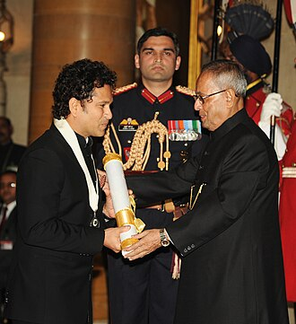
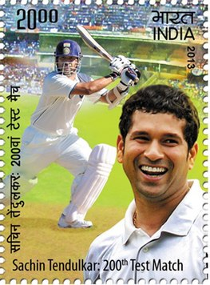
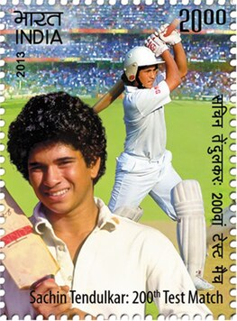

| Born | 24 April 1973 (age 51) Bombay, Maharashtra, India (now Mumbai, India) |
| Nickname | Little Master, Master Blaster |
| Father | Ramesh Tendulkar |
| Mother | Rajni Tendulkar |
| Son | Arjun Tendulkar |
| Spouse | Anjali Sachin |
| Autobiography | Playing It My Way |
| Website | sachintendulkar.com |
Sachin Ramesh Tendulkar is an Indian former international cricketer who captained the Indian national team. He is widely regarded as one of the greatest batsmen in the history of cricket. Hailed as the world's most prolific batsman of all time, he is the all-time highest run-scorer in both ODI and Test cricket with more than 18,000 runs and 15,000 runs, respectively. He also holds the record for receiving the most player of the match awards in international cricket.
for more Click Here
Sachin receiving the Padma Vibhushan from President Pratibha Patil in May 2008
Sachin receiving the Bharat Ratna Award from President Pranab Mukherjee in February 2014
 